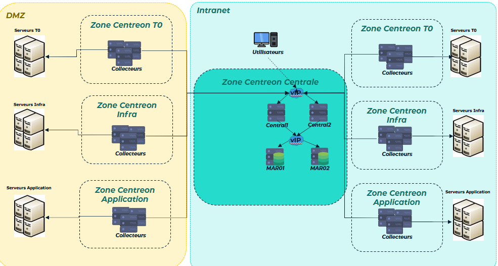

Présentation
Bonjour, je m'appelle Adam REFFAD, je suis alternant en tant qu'administrateur supervision dans le cadre d'un BTS SIO option SISR. J'effectue actuellement mon alternance à la mairie de la ville de paris et ma formation dans le campus montsouris. dans mon entreprise d'accueil, Je travaille au sein de la DSIN (Direction du système d'information et du numérique), dans la section STIPS (Infrastructures Production et Sécurité) au bureau BECID (bureau de l'exploitation, du cloud et de l'ingénierie datacenter). Aussi, le parc informatique s'éléve à environ 20 000 machines actuellement :
-Dont 6 785 machines virtuelles sous 144 hôtes physiques VMware (22 clusters)
-Et 1 152 machines virtuelles sous 78 hôtes physiques Nutanix (11 clusters)
Tout le reste ce sont des machines extérieures à la ville, des climatiseurs, des baie de stockage ou des équipement réseaux (répéteur, routeur, switch etc…) ou autre.
(Ce sont les chiffre de Janvier 2026, le nombre d’hôte physique et virtuel a grandement augmenté depuis ce qui nous rapproche des 20K actuellement)
centre de formation =>
entreprise =>
schéma de l'Infrastructure supervision :

contact:
- GITHUB: https://github.com/adamopendel
- Téléphone: 07 66 85 89 32
- E-mail: adamreffadpro@gmail.com